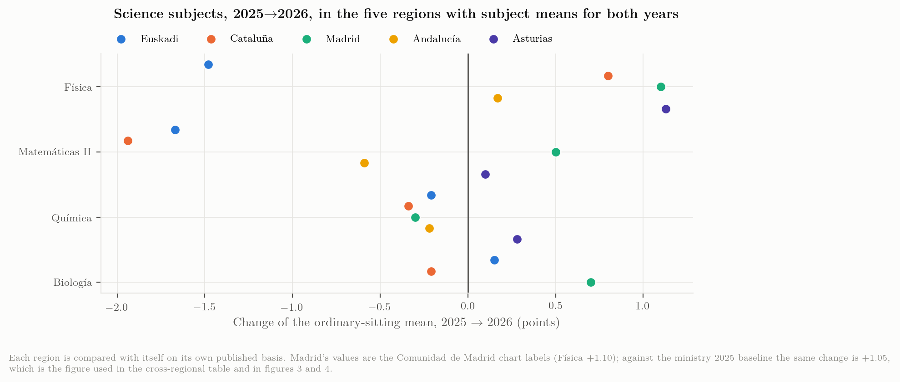
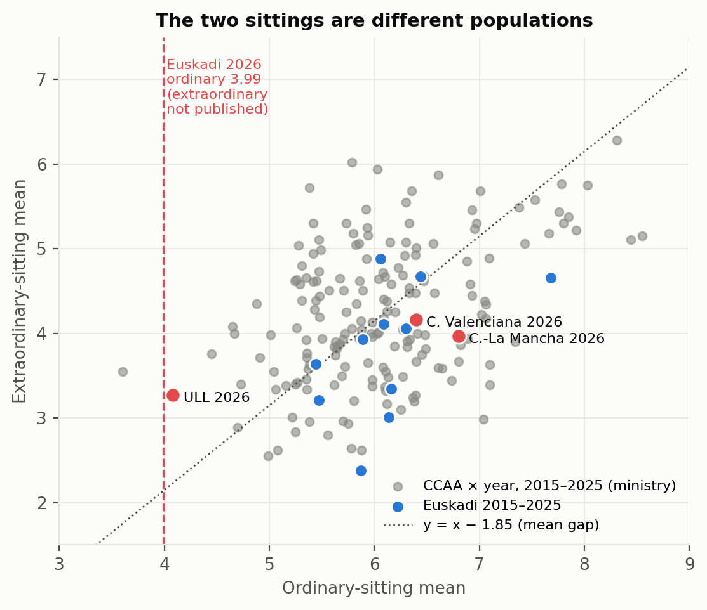
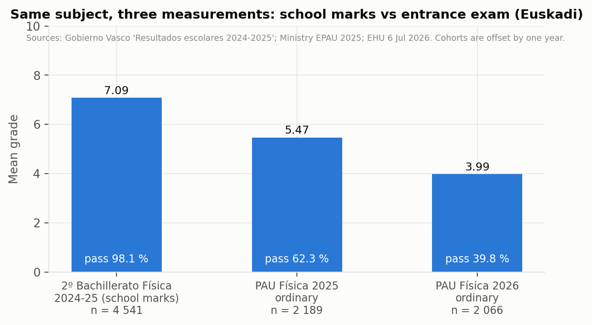
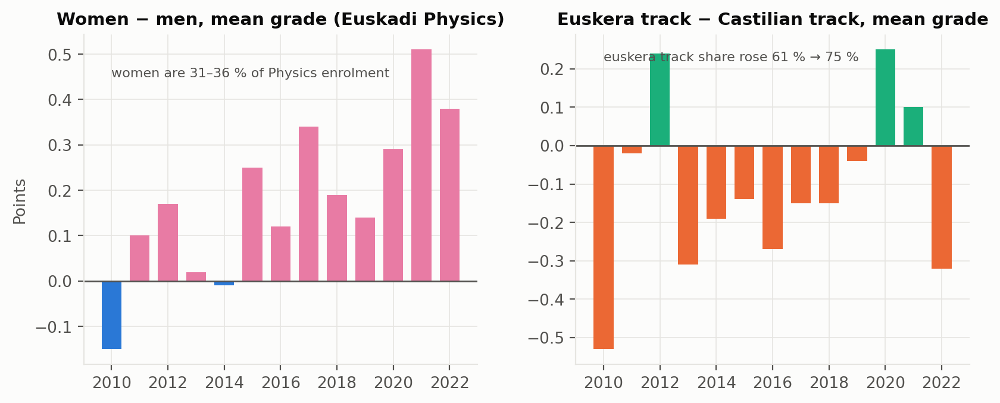

Subjects, sittings, participation and groups
Física against its neighbours, June against July, exam marks against school marks, and the sex and language dimensions
1 The science block, 2025 → 2026, five regions
Five communities have published subject means for both 2025 and 2026: Euskadi (EHU deck), Cataluña (Govern dossiers, “aptes” basis), Madrid (chart labels), Andalucía (Junta table; 2025 baselines for Matemáticas II and Química from the Ministry cube) and Asturias (Uniovi releases; same treatment).
data/analysis/subjects_2025_2026_by_region.csv.
| Subject, Δ 2025→2026 | Euskadi | Cataluña | Madrid | Andalucía | Asturias |
|---|---|---|---|---|---|
| Física | -1.48 | +0.80 | +1.10 | +0.17 | +1.13 |
| Matemáticas II | -1.67 | -1.94 | +0.50 | -0.59 | +0.10 |
| Química | -0.21 | -0.34 | -0.30 | -0.22 | +0.28 |
| Biología | +0.15 | -0.21 | +0.70 | — | — |
| Historia de España | -0.83 | — | — | — | — |
| Euskara II | -0.48 | — | — | — | — |
| Lengua Castellana | +0.03 | — | — | — | — |
| Hª Filosofía | -0.29 | — | — | — | — |
| Subject, mean 2026 | Euskadi | Cataluña | Madrid | Andalucía | Asturias |
|---|---|---|---|---|---|
| Física | 3.99 | 6.84 | 6.70 | 5.86 | 6.62 |
| Matemáticas II | 5.06 | 4.18 | 6.30 | 5.95 | 6.86 |
| Química | 6.03 | 6.04 | 5.90 | 5.27 | 7.67 |
| Biología | 6.60 | 6.02 | 6.30 | — | — |
| Historia de España | 6.08 | — | — | — | — |
| Euskara II | 6.33 | — | — | — | — |
| Lengua Castellana | 6.42 | — | — | — | — |
| Hª Filosofía | 6.81 | — | — | — | — |

Read by rows, Table 1 says that no subject moved the same way everywhere. Física fell in Euskadi and rose in the other four; Matemáticas II fell in Euskadi, Cataluña and Andalucía and rose in Madrid and Asturias; Química fell slightly in four of five and rose in Asturias; Biología rose in Euskadi, Madrid and Asturias and fell in Cataluña. Read by columns, Euskadi is the only community where the two hardest quantitative subjects fell together by more than a point and a half (\(-1.48\), \(-1.67\)) while Química (\(-0.21\)), Biología (\(+0.15\)) and Lengua (\(+0.03\)) barely moved. The Basque 2026 problem is a science-technical block problem, and within that block it is a Física-and-Matemáticas problem, not a general marking or cohort problem — Química is marked by tribunals drawn from the same pool of secondary teachers.
Cataluña shows the mirror image: a Matemàtiques paper that produced the lowest subject mean of a decade (4.18) and 2 057 revision requests, next to a Física paper that produced the best Física mean in five years (6.84). Two subjects, one exam authority, one cohort, opposite outcomes: the paper is the variable.
2 Ordinary versus extraordinary
The July sitting is a different population — candidates who failed or did not sit in June — and every dataset in this study shows it 1.5 to 3 points below June.
| Year | Ordinary | Extraordinary | Gap |
|---|---|---|---|
| 2015 | 5.44 | 3.64 | 1.80 |
| 2016 | 6.14 | 3.01 | 3.13 |
| 2017 | 5.89 | 3.93 | 1.96 |
| 2018 | 6.16 | 3.35 | 2.81 |
| 2019 | 5.87 | 2.38 | 3.49 |
| 2020 | 6.44 | 4.67 | 1.77 |
| 2021 | 7.68 | 4.66 | 3.02 |
| 2022 | 6.06 | 4.88 | 1.18 |
| 2023 | 6.30 | 4.06 | 2.24 |
| 2024 | 6.09 | 4.11 | 1.98 |
| 2025 | 5.47 | 3.21 | 2.26 |

Across the 187 community-years the gap averages \(1.85 \pm 0.86\) points. The three 2026 extraordinary values found — Comunitat Valenciana 4.16 (777 presented), Castilla-La Mancha 3.97 (142), Tenerife 3.27 (97) — sit exactly on the historical relation. EHU has not published the July 2026 Física mean; only the global July pass rate (71.40 % of 1 332 presented, against 90.6 % in July 2025) and the observation that the 624 candidates who re-sat to improve a June mark chose “sobre todo Matemáticas II, Biología y Química” (Donostitik, 2026). If the historical gap held, the Basque July Física mean would be near 2, which would be the lowest in the panel; if the July paper was pitched differently, it would not. This single number is the most informative unpublished Basque figure after the tribunal spread.
3 Who sits Física, and how many
| Year | Enrolled | Presented | Presented / enrolled % |
|---|---|---|---|
| 2015 | 1 756 | 1 464 | 83.4 |
| 2016 | 1 642 | 1 369 | 83.4 |
| 2017 | 2 461 | 1 789 | 72.7 |
| 2018 | 2 603 | 1 749 | 67.2 |
| 2019 | 2 550 | 1 665 | 65.3 |
| 2020 | 2 564 | 1 638 | 63.9 |
| 2021 | 2 371 | 1 774 | 74.8 |
| 2022 | 2 334 | 1 742 | 74.6 |
| 2023 | 2 429 | 1 830 | 75.3 |
| 2024 | 2 341 | 1 788 | 76.4 |
| 2025 | 2 597 | 2 189 | 84.3 |
| 2026 | — | 2 066 | — |
Two structural facts. First, Física enrolment in Euskadi has been flat at 2 300–2 600 since 2017 while the Basque PAU cohort grew from ≈ 9 900 to ≈ 12 300, so Física’s share of the cohort fell from about a quarter to about a fifth. Second, the presentation rate jumped from 64–76 % (2017–2024) to 84 % in 2025: under the 2025 rules far fewer enrolled students skipped the Física exam. The 2025 pool therefore contained some 400 candidates who, under the previous incentives, would not have sat — plausibly the weakest — and the 2025 fall of \(-0.62\) is partly this compositional change. For 2026 the enrolment is unpublished; 2 066 presented is 6 % fewer than in 2025 and 16 % more than in 2024.
4 School marks against exam marks
The Basque Inspectorate’s Resultados escolares 2024-2025 (Gobierno Vasco, Inspección de Educación, 2025) gives, for 2º Bachillerato Física across all networks and linguistic models: 4 541 students evaluated, 4 455 passed (98.11 %), mean 7.09 — public 7.04, private/concertada 7.15; Araba 7.09, Bizkaia 7.11, Gipuzkoa 7.08; model A 6.93, B 7.31, D 7.09.

Three consequences. (i) Only about 45–48 % of the students who take Física in 2º Bachillerato sit PAU Física (\(2\,189 / 4\,541 = 0.48\) for the 2025 exam; \(2\,066 / 4\,541 = 0.45\) for 2026 against the same, offset, cohort). The PAU Física population is a self-selected half of the Bachillerato Física population — presumably the half that needs the weighting for engineering and physics degrees. (ii) Even that stronger half scored 1.6 points below its school mark in 2025 and, if school marks did not move, 3.1 points below in 2026. (iii) The school pass rate is 98 %; the exam pass rate is 40 %. Whatever the 2026 paper measured, it is not what Bachillerato Física teachers certify. The 2025-26 school results, due in the coming months, will give the matched cohort.
The centre-level scatter of the July package (hist_evolution, 2010–2016) already showed a mean school-minus-exam gap of about one point across all subjects; a three-point gap in a single subject is of a different order.
5 Sex and language
| Year | Men | Women | W − M | % women enrolled | Euskera track | Castilian track | EU − ES | % euskera track |
|---|---|---|---|---|---|---|---|---|
| 2010 | 4.50 | 4.35 | -0.15 | 34.9 | 4.24 | 4.77 | -0.53 | 61.4 |
| 2011 | 4.41 | 4.51 | +0.10 | 33.8 | 4.44 | 4.46 | -0.02 | 62.4 |
| 2012 | 6.44 | 6.61 | +0.17 | 32.6 | 6.59 | 6.35 | +0.24 | 62.5 |
| 2013 | 6.16 | 6.18 | +0.02 | 30.6 | 6.05 | 6.36 | -0.31 | 62.8 |
| 2014 | 5.69 | 5.68 | -0.01 | 32.3 | 5.62 | 5.81 | -0.19 | 61.5 |
| 2015 | 5.37 | 5.62 | +0.25 | 31.5 | 5.40 | 5.54 | -0.14 | 64.9 |
| 2016 | 6.12 | 6.24 | +0.12 | 30.6 | 6.07 | 6.34 | -0.27 | 67.5 |
| 2017 | 5.80 | 6.14 | +0.34 | 31.5 | 5.85 | 6.00 | -0.15 | 68.4 |
| 2018 | 6.12 | 6.31 | +0.19 | 32.0 | 6.13 | 6.28 | -0.15 | 68.5 |
| 2019 | 5.85 | 5.99 | +0.14 | 32.9 | 5.88 | 5.92 | -0.04 | 71.0 |
| 2020 | 6.36 | 6.65 | +0.29 | 33.7 | 6.52 | 6.27 | +0.25 | 75.2 |
| 2021 | 7.51 | 8.02 | +0.51 | 34.5 | 7.72 | 7.62 | +0.10 | 73.5 |
| 2022 | 5.92 | 6.30 | +0.38 | 36.0 | 5.97 | 6.29 | -0.32 | 75.0 |

Women are 31–36 % of Basque Física enrolment and, from 2011, outscore men every year by \(+0.21\) on average, with the gap widening after 2016 (\(+0.34\) in 2017, \(+0.51\) in 2021, \(+0.38\) in 2022). The Canarian dashboards show the same sign in 2026 under collapse conditions: ULL women 4.09 vs men 4.07, ULPGC women 4.50 vs men 4.38. The euskera track rose from 61 % to 75 % of Física candidates over 2010–2022; its mean was below the castellano track by 0.1–0.3 in most years, and above it in 2012, 2020 and 2021. Neither dimension has been published for Física since 2022, and EHU’s 6 July statement that its global 2026 analysis found no bias by linguistic model or network referred to Euskara II, not Física.